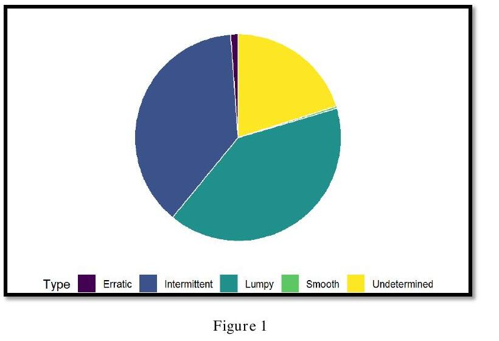
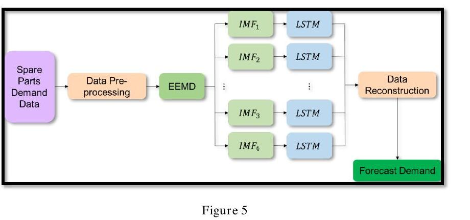
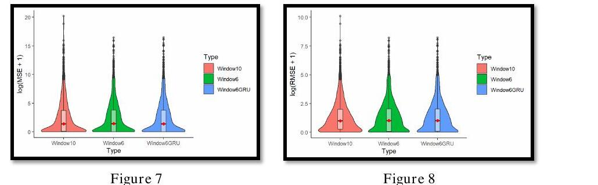

Data Engineering
Intermittent Demand Forecasting
A research attachment at A*STAR's Singapore Institute of Manufacturing Technology (SIMTech), forecasting demand for military spare parts (SPs) — components that are notoriously hard to forecast because most of their demand history is zero. Supervised by Dr Yuan Xue Ming, the project tested whether decomposing a demand signal before feeding it to an LSTM could out-predict a plain recurrent model, across a real dataset of 1,998 unique spare parts.
Why intermittent demand is hard
Spare-parts demand is rarely smooth: most time steps have zero demand, punctuated by occasional spikes. Classifying each part by its Average Demand Interval (ADI) and squared coefficient of variation (CV²) against the data set split into five categories:

Before modelling, I also tried HDBSCAN and hierarchical clustering to look for hidden structure between parts. Neither was informative: HDBSCAN mostly tracked ADI monotonically rather than finding real groups, and the dendrogram just split a small slice of parts from everything else. The data's demand magnitudes vary too widely across parts for either method to find meaningful neighbours — a useful negative result that ruled out a clustering-based approach.
EEMD-LSTM pipeline
Rather than feed the raw demand series straight into an RNN, the approach follows Dali & Chengcheng (2021): decompose each part's demand series into Intrinsic Mode Functions (IMFs) via Ensemble Empirical Mode Decomposition, forecast each IMF independently, then reconstruct the final forecast by summing the predicted components back together.

Three model configurations were trained on a 70/30 chronological split (May 2017 – May 2020 data), scaled with a MinMax scaler fit on the training set only:
- LSTM A — window size 6
- LSTM B — window size 10
- GRU — window size 6, swapping the LSTM cell for a GRU
All three shared the same architecture otherwise: an 8-unit RNN layer, 0.2 dropout, an 8-unit ReLU dense layer, single-step output, Adam at a 0.0001 learning rate, MSE loss, batch size 100, 20 epochs.
Results
Across four representative SPs spanning the erratic, intermittent, lumpy, and smooth categories, no single model consistently won — GRU beat both LSTM variants on the erratic part, LSTM B won on the smooth part, and all three were close on the rest. To see the real pattern, MSE and RMSE were computed across all 1,998 parts and compared as distributions:

The takeaway: swapping LSTM for GRU made almost no difference to accuracy — a useful result on its own, since GRU trains faster with fewer parameters. The window size mattered more, but cut both ways, suggesting the right window size may depend on a part's own demand scale rather than being fixed across the whole catalogue.
Conclusion & future work
The report's proposed next steps: tune window size per part rather than globally (e.g. smaller windows for high-magnitude parts), and look at Temporal Convolutional Networks as a training-time and performance upgrade over the LSTM, since TCNs don't require backpropagation through time and can train in parallel.